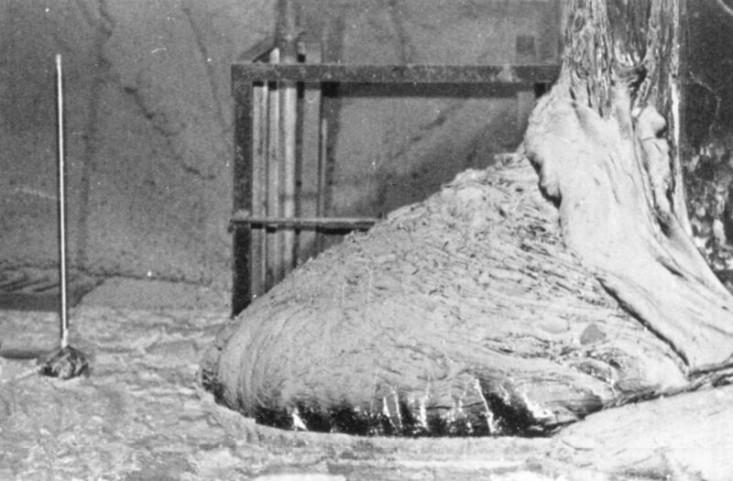

Chapter 5 - Logarithmic Functions
5.1 Logarithms and their Properties
Objectives
- I can convert between exponential and logarithmic statements.
- I can apply the properties of logarithms to solve equations.
Common Logarithm Function
- If \(x\) is a positive number, \(\log(x)\) is the exponent of 10 that gives \(x\).
- In other words, if \(y = \log(x)\) then \(10^y = x\).
Example 1
Rewrite the following statements using exponents instead of logs.
- \(\log(4) = 0.602\)
- \(\log(q) = z\)
Example 2
Evaluate with a calculator.
- \(\log(10^7)\)
- \(10^{\log(5)}\)
Properties of the Common Logarithm
- By definition, \(y = \log(x)\) means \(10^y = x\). In particular, \(\log(1) = 0\) and \(\log(10) = 1\).
- The functions \(10^x\) and \(\log(x)\) are inverses, so they "undo" each other: \(\log(10^x) = x\) for all \(x\) and \(10^{\log(x)} = x\) for \(x > 0\).
- For \(a\) and \(b\) both positive and any value of \(t\): \(\log(ab) = \log(a) + \log(b)\), \(\log\left(\frac{a}{b}\right) = \log(a) - \log(b)\), and \(\log(b^t) = t\log(b)\).
Example 3
Solve the equation using logs. \[(1.45)^x = 25\]
The Natural Logarithm
- For \(x > 0\), \(\ln(x)\) is the power of \(e\) that gives \(x\).
- In symbols, \(\ln(x) = y\) means \(e^y = x\), and \(y\) is called the natural logarithm of \(x\).
Properties of the Natural Logarithm
- By definition, \(y = \ln(x)\) means \(x = e^y\). In particular, \(\ln 1 = 0\) and \(\ln e = 1\).
- The functions \(e^x\) and \(\ln x\) are inverses, so they "undo" each other: \(\ln(e^x) = x\) for all \(x\) and \(e^{\ln x} = x\) for \(x > 0\).
- For \(a\) and \(b\) both positive and any value of \(t\): \(\ln (ab) = \ln a + \ln b\), \(\ln \left(\frac{a}{b}\right) = \ln a - \ln b\), and \(\ln (b^t) = t\ln b\).
Example 4
Solve the equation using logs. \[10 = 22(0.87)^q\]
Assignments
- Day 1 Page 185, 1-17 odd
- Day 2 Page 186, 19-33 odd
- Day 3 Page 187, 35-51 odd (not 45, 51)
Logarithm Quiz
5.1 Day 2
Agenda
- Warm-Up Problem
- Day 1 Page 185, 1-17 odd Assignment Questions
- Misconceptions Involving Logs Notes
- Work time
Objectives
- I can convert between exponential and logarithmic statements.
- I can apply the properties of logarithms to solve equations.
Warm-Up Problem
Simplify. \[log(\sqrt{10000})\]
Solve the equation using logs. \[\frac{2}{7} = (0.6)^{2t}\]
Properties of the Natural Logarithm
- The functions \(e^x\) and \(\ln x\) are inverses, so they "undo" each other: \(\ln(e^x) = x\) for all \(x\) and \(e^{\ln x} = x\) for \(x > 0\).
- For \(a\) and \(b\) both positive and any value of \(t\): \(\ln (ab) = \ln a + \ln b\), \(\ln \left(\frac{a}{b}\right) = \ln a - \ln b\), and \(\ln (b^t) = t\ln b\).
Questions on Page 185, 1-17 odd?
Misconceptions Involving Logs Notes
- \(\log(a+b) \neq \log(a) + \log(b)\)
- \(\log(a-b) \neq \log(a) - \log(b)\)
- \(\log(ab) \neq (\log(a))(\log(b))\)
- \(\log\left(\frac{a}{b}\right) \neq \frac{\log(a)}{\log(b)}\)
- \(\log\left(\frac{1}{a}\right) \neq \frac{1}{\log(a)}\)
Work time on Assignments
- Day 1 Page 185, 1-17 odd
- Day 2 Page 186, 19-33 odd
- Day 3 Page 187, 35-51 odd (not 45, 51)
- All Due Wednesday
5.1 Day 3
Agenda
- Warm-Up Problem
- Page 186, 19-33 odd Assignment Questions
- Work time
Objectives
- I can convert between exponential and logarithmic statements.
- I can apply the properties of logarithms to solve equations.
Warm-Up Problem
Use the properties of logarithms to solve for \(x\). \[\log(3(2)^x) = 8\]
Solve the equation exactly for \(x\). \[e^{x+5} = 7(2)^x\]
Properties of the Natural Logarithm
- The functions \(e^x\) and \(\ln x\) are inverses, so they "undo" each other: \(\ln(e^x) = x\) for all \(x\) and \(e^{\ln x} = x\) for \(x > 0\).
- For \(a\) and \(b\) both positive and any value of \(t\): \(\ln (ab) = \ln a + \ln b\), \(\ln \left(\frac{a}{b}\right) = \ln a - \ln b\), and \(\ln (b^t) = t\ln b\).
Warm-Up Problem 1 Solution
- Use the properties of logarithms to solve for \(x\).
\[\begin{align*}
\log(3(2)^x) &= 8 \\
\log(3)+\log(2^x) &= 8 \\
\log(3)+x\log(2) &= 8 \\
x\log(2) &= 8-\log(3) \\
x &= \frac{8-\log(3)}{\log(2)} \\
\end{align*}\]
Warm-Up Problem 2 Solution
- Solve the equation exactly for \(x\).
\[\begin{align*}
e^{x+5} &= 7(2)^x \\
\ln(e^{x+5}) &= \ln(7(2)^x) \\
x+5 &= \ln(7)+\ln((2)^x) \\
x+5 &= \ln(7)+x\ln(2) \\
x-x\ln(2) &= \ln(7)-5 \\
x(1-\ln(2)) &= \ln(7)-5 \\
x &= \frac{\ln(7)-5}{1-\ln(2)}
\end{align*}\]
Questions on Page 186, 19-33 odd?
Work time on Assignments
- Day 1 Page 185, 1-17 odd
- Day 2 Page 186, 19-33 odd
- Day 3 Page 187, 35-51 odd (not 45, 51)
- All Due Tomorrow
5.2 Logarithms and Exponential Models
Objectives
- I can use logarithms to solve exponential equations.
- I can setup an exponential equation to model doubling and half-life.
Example 1 - Doubling Time
You place 1000 MMK in a KBZ Bank fixed deposit bank account. According to their website, a 1 month term account earns 9% interest, 3 months earns 9.25%, 6 months earns 9.5%, 9 months earns 9.75%, and 12 months earns 10%.
- How often is a fixed account compounded at KBZ Bank?
- \(\$ 1 \approx 1300\) MMK. If you deposit $1000000 into the KBZ fixed deposit account with a 12 month term, how much interest would you earn?
- If you open an account with 1000 MMK, how long would it take to double your money with each term account?
Example 1 - Doubling Time - Solution
You place 1000 MMK in a KBZ Bank fixed deposit bank account. According to their website, a 1 month term account earns 9% interest, 3 months earns 9.25%, 6 months earns 9.5%, 9 months earns 9.75%, and 12 months earns 10%.
- How often is a fixed account compounded at KBZ Bank? Depends on the term. \(B = P\left(1+\frac{r}{n}\right)^{nt}\)
- \(\$ 1 \approx 1300\) MMK. If you deposit $1,000,000 into the KBZ fixed deposit account with a 12 month term, how much interest would you earn? \(P = 1000000\), \(t = 1\), \(r = 0.1\), \(n = 1\), so \(B = 1000000\left(1+\frac{0.1}{1}\right)^{1(1)} = 1100000\). This means they earn $100000 in interest.
- If you open an account with 1000 MMK, how long would it take to double your money with each term account?
- 1 month: \(n = 12\) and \(r = 0.09\), so \(2000 = 1000\left(1+\frac{0.09}{12}\right)^{12t}\). \(t = \ln(2)/(12\ln\left(1+\frac{0.09}{12}\right)) \approx 7.730\) years.
- 3 months: \(n = 4\) and \(r = 0.0925\), so \(2000 = 1000\left(1+\frac{0.0925}{4}\right)^{4t}\). \(t = \ln(2)/(4\ln\left(1+\frac{0.0925}{4}\right)) \approx 7.579\) years.
- 6 months: \(n = 2\) and \(r = 0.095\), so \(2000 = 1000\left(1+\frac{0.095}{2}\right)^{2t}\). \(t = \ln(2)/(2\ln\left(1+\frac{0.095}{2}\right)) \approx 7.468\) years.
- 9 months: \(n = 12/9\) and \(r = 0.0975\), so \(2000 = 1000\left(1+\frac{0.0975}{12/9}\right)^{(12/9)t}\). \(t = \ln(2)/((12/9)\ln\left(1+\frac{0.0975}{(12/9)}\right)) \approx 7.366\) years.
- 12 months: \(n = 1\) and \(r = 0.1\), so \(2000 = 1000\left(1+\frac{0.1}{1}\right)^{(1)t}\). \(t = \ln(2)/(1\ln\left(1+\frac{0.1}{1}\right)) \approx 7.272\) years.
Example 2 - Half-Life
The Chernobyl expolosion in 1986 initially had a radiation reading of 300 Sv/hr near the reactor core. After 22 years, the radiation levels inside the reactor hall were about 34 Sv/hr. More than half of people exponsed to 5 Sv will die from the radiation.

- What is the rate at which the radiation is decaying? Assume exponential decay.
- How long was it until half the radiation remained?
- How long would it take to receive a lethal dose of radiation in the reactor hall today?
Example 2 - Half-Life - Solution
The Chernobyl expolosion in 1986 initially had a radiation reading of 300 Sv/hr near the reactor core. After 22 years, the radiation levels inside the reactor hall were about 34 Sv/hr. More than half of people exponsed to 5 Sv will die from the radiation.
- What is the rate at which the radiation is decaying? Assume exponential decay. \(34 = 300e^{k(22)}\), so \(k = \ln(34/300)/22 \approx -0.098973725\), so down by 9.897%.
- How long was it until half the radiation remained? \(150 = 300e^{-0.098973725t}\), so \(t = \ln(150/300)/(-0.098973725) \approx 7.003345388\) years.
- How long would it take to receive a lethal dose of radiation in the reactor hall today? \(Sv = 300e^{-0.098973725(30)} \approx 15.40312983\), so 15 Sv/hr would mean 5 Sv in 20 minutes.
Converting Between \(Q = ab^t\) and \(Q = ae^t\)
Any exponential function can be written in either of the two forms: \[Q = ab^t \text{ or } Q = ae^{kt}\] If \(b = e^k\), so \(k = \ln(b)\), the two formulas represent the same function.
Example 3
Convert to the form \(Q = ab^t\). \[Q = 0.3e^{0.7t}\]
Example 4
Convert to the form \(Q = ae^{kt}\). Give the starting value \(a\), the growth rate \(r\), and the continuous growth rate \(k\). \[Q = 5(2)^{t/8}\]
5.2 Assignments and 5.1 Homework Check
- Homework Check: 5.1, Page 185, 1-51 odd (not 45, 51)
- Day 1, Page 194, 1-19 odd
- Day 2, Page 194, 21-51 odd (not 43)
- 5.2 Assignments are due Monday
5.3 The Logarithmic Function
5.4 Logarithmic Scales
Chapter 5 Review